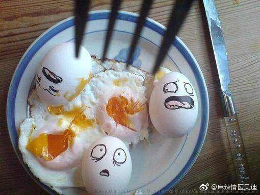
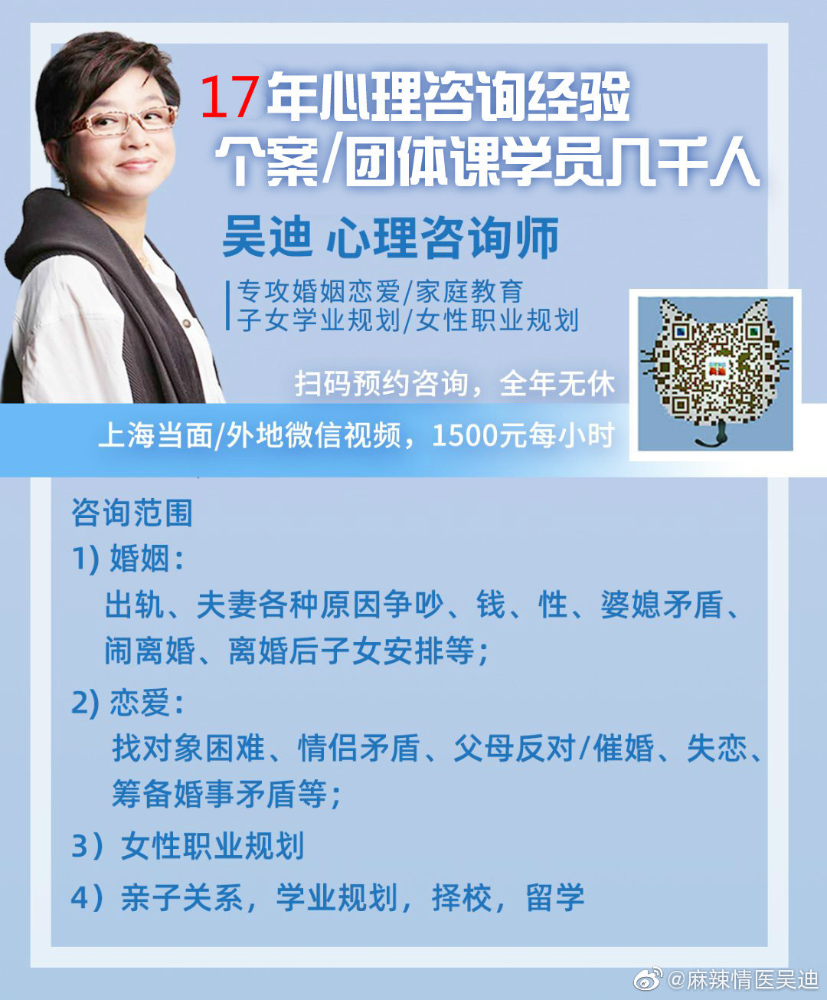

是的哈，做什么整容手术？换换脑子是更好的方案，还不用皮肉受苦。
@麻辣情医吴迪:
#咨询中来# 老公出轨，你忙着挽回去做整容手术，缩阴手术。我告诉你，你就是把整个头换了，都没用！你要做的是换脑子，脱离婚姻邪教！
我有个女朋友是三甲医院的整容科医生，她给我转借了好几个这样的女病人：结婚了10年20年自称“传统女性”，大多数是初恋初性结婚。老公出轨，甚至是长期出轨，她们搞不定，害怕离婚，拼命想办法挽回。
她们天真地以为，男人出轨只是因为她们年纪大了，皮肤松弛了，生完二娃阴道松了。于是下狠心去做整容手术，缩阴手术。
我朋友说，这样的女病人真的很多！她是良心医生，正好又认识我，就让她们来找我换换思路。
她说，如果只为了赚钱，她真的可以一个又一个地给她们推荐整容项目。慌不择路的女人一定会买单的！
我有个女朋友是三甲医院的整容科医生，她给我转借了好几个这样的女病人：结婚了10年20年自称“传统女性”，大多数是初恋初性结婚。老公出轨，甚至是长期出轨，她们搞不定，害怕离婚，拼命想办法挽回。
她们天真地以为，男人出轨只是因为她们年纪大了，皮肤松弛了，生完二娃阴道松了。于是下狠心去做整容手术，缩阴手术。
我朋友说，这样的女病人真的很多！她是良心医生，正好又认识我，就让她们来找我换换思路。
她说，如果只为了赚钱，她真的可以一个又一个地给她们推荐整容项目。慌不择路的女人一定会买单的！
- 
- 